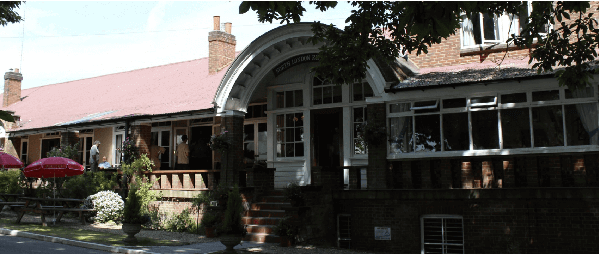

This iconic venue is steeped in shooting history, and after shooting there even just a few time, becomes ingrained in one's psyche. It's shooting’s Wembley and Twickenham. Bisley is our 'hallowed ground'!
Initially it can feel somewhat daunting, with regulars using nicknames for various landmarks.
Worry not! A Club member will usually have arranged to meet you and will show you around the Camp,
and help you get your bearings. Everyone on Camp is very friendly and will go out of their way to help you.
These days navigation apps also help with the main landmarks. In no time at all you will feel like a local. 
| Location | What-3-Words | Google Maps |
|---|---|---|
| Bisley Camp entrance | engine.shut.frames | 🗺 |
| NRA Office | charge.spoke.inner | 🗺 |
| Range Office & Armoury | that.sadly.normal | 🗺 |
| Fultons Gunsmith | shut.prefer.yarn | 🗺 |
| North London Rifle Club | having.worm.chops | 🗺 |
| Surrey Rifle Association | yappy.term.fired | 🗺 |
| Clays Café | spit.event.fried | 🗺 |
| Century Range (300, 500, 600 yards) | orbit.chew.chief | 🗺 |
| Stickledown Range (800, 900, 1000 yards) | slope.cafe.remove | 🗺 |